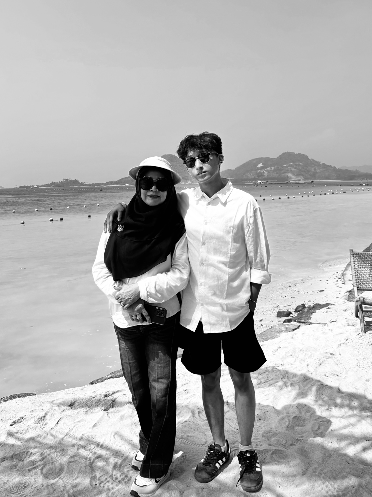

FARHAN ARINATA / PERSONAL ARCHIVE
What if a website
could feel like a memory?
Move your cursor. The archive reacts to you.
CHAPTER 01 / AFTER GRADUATION
You believed
there was more.
Work. Further education. A career worth building. A life that still has no final shape.
CHAPTER 02 / THE LITTLE THINGS
I think about
everything.
Sometimes the future. Sometimes a haircut, a photograph, a caption, or a message I still haven't sent.

CHAPTER 03 / SENTIMENTAL THINGS
Small things
stay longer.
Certain songs. Old photographs. Places. Ordinary moments that become important only after they are gone.
MILESTONE UNLOCKED
Mechanical Engineering
graduate.
The degree is finished. The becoming isn't.
CHAPTER 05 / DOUBT
But—
certainty is
not guaranteed.
I question whether I'm making the right decisions. Whether I'm trying too hard. Whether I'm doing enough.
CHAPTER 06 / STILL MOVING
And that's
why I move.
Build a career. Become independent. Try things that scare me. Meet people. Make mistakes. Learn. Keep moving.

FINAL CHAPTER / THE ARCHIVE